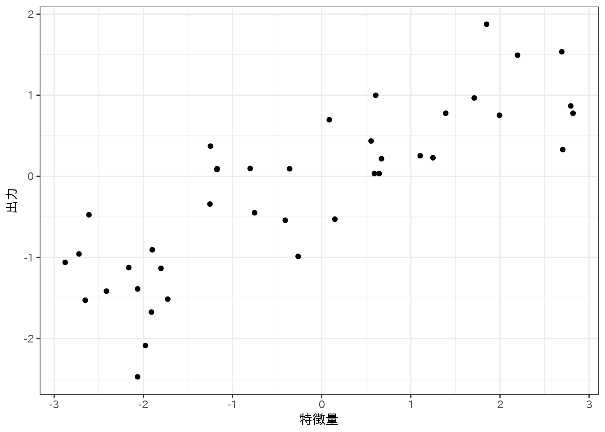

2.1 教師あり機械学習アルゴリズム
2.1.1 サンプルデータセット
2.1.1.1 人工的なデータセット
書籍の方ではmgleranモジュールを使ってデータを生成しているので、reticulateをデータだけ取得する。
まずは2クラス分類向けのforgeを取得し、プロットする。
mglearn <- import("mglearn")
forge <- mglearn$datasets$make_forge()
forge %<>% as.data.frame()
names(forge)[3] <- "y"
ggplot(forge, aes(x = X1, y = X2, color = factor(y))) +
scale_color_discrete(name = "クラス") +
labs(x = "第1特徴量", y = "第2特徴量") +
geom_point()
次に回帰向けのデータセットwaveを取得し、プロットする。
wave <- mglearn$datasets$make_wave(n_samples = 40L)
wave %<>% as.data.frame()
names(wave) <- c("X", "y")
ggplot(wave, aes(X, y)) +
geom_point() +
labs(x = "特徴量", y = "出力")
2.1.1.2 実世界のデータセット
breast cancerもboston housingもmlbenchパッケージに含まれているが、breast cancerの方はsklearnに入っているものと若干異なる。breast cancerにはOriginalとDiagnosticの2種類あるらしい。sklearnに入っているのはDiagnosticで、mlbenchのやつはOriginal。
- UCI Machine Learning Repository: Breast Cancer Wisconsin (Original) Data Set
- UCI Machine Learning Repository: Breast Cancer Wisconsin (Diagnostic) Data Set
Diagnosticの方は少し探したけどRの中には見つからなかったので(代わりにOriginalがMASS::biopsyにもあるのを見つけた)、sklearnから読み込んで細工しておく。
sklearn <- import("sklearn")
cancer = sklearn$datasets$load_breast_cancer()
cancer_data <- as.data.frame(cancer$data) # データフレーム化
names(cancer_data) <- cancer$feature_names # 特徴量名取り込み
cancer_data$Class <- cancer$target_names[cancer$target+1] # クラス取り込み- breast cancerは569のデータポイントと30の特徴量を持つ。
dim(cancer_data) # クラスも含めているので列数は1多い
## [1] 569 31各クラスの集計をする。
table(cancer_data$Class)
##
## benign malignant
## 357 212boston housingはmlbenchパッケージ内のものとsklearnのものは同じなので、そのまま使用できる。
data("BostonHousing")
head(BostonHousing)
## crim zn indus chas nox rm age dis rad tax ptratio b
## 1 0.00632 18 2.31 0 0.538 6.575 65.2 4.0900 1 296 15.3 396.90
## 2 0.02731 0 7.07 0 0.469 6.421 78.9 4.9671 2 242 17.8 396.90
## 3 0.02729 0 7.07 0 0.469 7.185 61.1 4.9671 2 242 17.8 392.83
## 4 0.03237 0 2.18 0 0.458 6.998 45.8 6.0622 3 222 18.7 394.63
## 5 0.06905 0 2.18 0 0.458 7.147 54.2 6.0622 3 222 18.7 396.90
## 6 0.02985 0 2.18 0 0.458 6.430 58.7 6.0622 3 222 18.7 394.12
## lstat medv
## 1 4.98 24.0
## 2 9.14 21.6
## 3 4.03 34.7
## 4 2.94 33.4
## 5 5.33 36.2
## 6 5.21 28.7次に、特徴量同士の積を重複ありで選択して拡張する、という作業が出て来る。書籍の方ではmglearnの影に隠れてしまっているが、これはsklearn.preprocessing.PolynomialFeaturesという関数の機能によっている。
これに近いことは、mlrCPOパッケージのcpoModelMatrix関数を使うと実行できる。mlrCPOパッケージはまだCRANには無いので、devtools::install_github("mlr-org/mlrCPO")のようにgithubからインストールする必要がある。
boston_task <- makeRegrTask(data = BostonHousing, target = "medv")
boston_task_ex <- boston_task %>>% cpoModelMatrix(~ 0 + .^2)
boston_task_ex
## Supervised task: BostonHousing
## Type: regr
## Target: medv
## Observations: 506
## Features:
## numerics factors ordered functionals
## 92 0 0 0
## Missings: FALSE
## Has weights: FALSE
## Has blocking: FALSE
## Has coordinates: FALSE
getTaskFeatureNames(boston_task_ex)
## [1] "crim" "zn" "indus" "chas0"
## [5] "chas1" "nox" "rm" "age"
## [9] "dis" "rad" "tax" "ptratio"
## [13] "b" "lstat" "crim:zn" "crim:indus"
## [17] "crim:chas1" "crim:nox" "crim:rm" "crim:age"
## [21] "crim:dis" "crim:rad" "crim:tax" "crim:ptratio"
## [25] "crim:b" "crim:lstat" "zn:indus" "zn:chas1"
## [29] "zn:nox" "zn:rm" "zn:age" "zn:dis"
## [33] "zn:rad" "zn:tax" "zn:ptratio" "zn:b"
## [37] "zn:lstat" "indus:chas1" "indus:nox" "indus:rm"
## [41] "indus:age" "indus:dis" "indus:rad" "indus:tax"
## [45] "indus:ptratio" "indus:b" "indus:lstat" "chas1:nox"
## [49] "chas1:rm" "chas1:age" "chas1:dis" "chas1:rad"
## [53] "chas1:tax" "chas1:ptratio" "chas1:b" "chas1:lstat"
## [57] "nox:rm" "nox:age" "nox:dis" "nox:rad"
## [61] "nox:tax" "nox:ptratio" "nox:b" "nox:lstat"
## [65] "rm:age" "rm:dis" "rm:rad" "rm:tax"
## [69] "rm:ptratio" "rm:b" "rm:lstat" "age:dis"
## [73] "age:rad" "age:tax" "age:ptratio" "age:b"
## [77] "age:lstat" "dis:rad" "dis:tax" "dis:ptratio"
## [81] "dis:b" "dis:lstat" "rad:tax" "rad:ptratio"
## [85] "rad:b" "rad:lstat" "tax:ptratio" "tax:b"
## [89] "tax:lstat" "ptratio:b" "ptratio:lstat" "b:lstat"しかし作成された特徴量の数は92で、12足りない。特徴量自身の二乗項が入っていないためだ。もともとの特徴量は13あったので、不足分が1つ足らないような気がするが、これは因子型特徴量のchacがダミー変数化されて2つの特徴量に分かれているためだ。
特徴量自身の二乗項は、I()を使って明示的に含めてやる必要がある。書籍の方に合わせるのであれば、少々面倒だが以下のようにやる。もっと上手いやり方があるかもしれない。
BostonHousing2 <- BostonHousing
BostonHousing2$chas %<>% as.numeric()
boston_task2 <- makeRegrTask(data = BostonHousing2, target = "medv")
fml <- paste0("I(", getTaskFeatureNames(boston_task2), "^2)", collapse = "+")
fml <- paste0("~0+", fml, "+.^2")
boston_task_ex2 <- boston_task2 %>>% cpoModelMatrix(as.formula(fml))
getTaskFeatureNames(boston_task_ex2)
## [1] "I(crim^2)" "I(zn^2)" "I(indus^2)" "I(chas^2)"
## [5] "I(nox^2)" "I(rm^2)" "I(age^2)" "I(dis^2)"
## [9] "I(rad^2)" "I(tax^2)" "I(ptratio^2)" "I(b^2)"
## [13] "I(lstat^2)" "crim" "zn" "indus"
## [17] "chas" "nox" "rm" "age"
## [21] "dis" "rad" "tax" "ptratio"
## [25] "b" "lstat" "crim:zn" "crim:indus"
## [29] "crim:chas" "crim:nox" "crim:rm" "crim:age"
## [33] "crim:dis" "crim:rad" "crim:tax" "crim:ptratio"
## [37] "crim:b" "crim:lstat" "zn:indus" "zn:chas"
## [41] "zn:nox" "zn:rm" "zn:age" "zn:dis"
## [45] "zn:rad" "zn:tax" "zn:ptratio" "zn:b"
## [49] "zn:lstat" "indus:chas" "indus:nox" "indus:rm"
## [53] "indus:age" "indus:dis" "indus:rad" "indus:tax"
## [57] "indus:ptratio" "indus:b" "indus:lstat" "chas:nox"
## [61] "chas:rm" "chas:age" "chas:dis" "chas:rad"
## [65] "chas:tax" "chas:ptratio" "chas:b" "chas:lstat"
## [69] "nox:rm" "nox:age" "nox:dis" "nox:rad"
## [73] "nox:tax" "nox:ptratio" "nox:b" "nox:lstat"
## [77] "rm:age" "rm:dis" "rm:rad" "rm:tax"
## [81] "rm:ptratio" "rm:b" "rm:lstat" "age:dis"
## [85] "age:rad" "age:tax" "age:ptratio" "age:b"
## [89] "age:lstat" "dis:rad" "dis:tax" "dis:ptratio"
## [93] "dis:b" "dis:lstat" "rad:tax" "rad:ptratio"
## [97] "rad:b" "rad:lstat" "tax:ptratio" "tax:b"
## [101] "tax:lstat" "ptratio:b" "ptratio:lstat" "b:lstat"